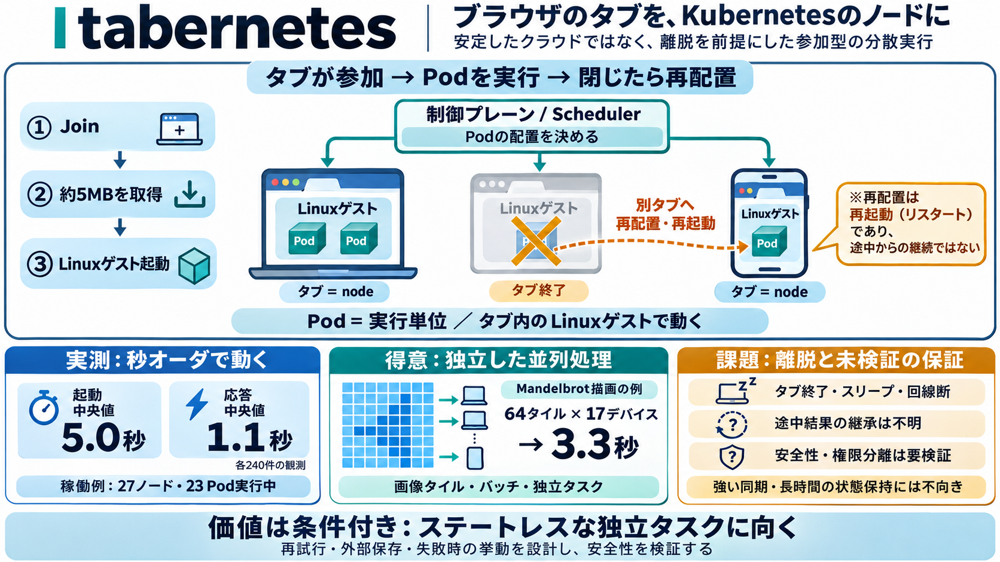

Browser tabs as a container runtime | Farid Zakaria’s Blog
Whereas the default Docker runtime, runc, starts your program as a process on the host’s kernel, tabc leverages the brow…

Whereas the default Docker runtime, runc, starts your program as a process on the host’s kernel, tabc leverages the brow…
> Quoting @fmzakari (Farid Zakaria): > > I ran a #linux container on a #mac with no Linux VM and no hypervisor. > > The…
The tabs can also run container images through an emulator. Tabernetes pulls image layers, builds an initial filesystem …
Your tab runs real container images, too. Type `kubectl run nginx --image=nginx:alpine`. Without a node from `join`, the…
WebAssembly (Wasm) is uniquely poised to enable the third wave of cloud computing as an ultra-efficient runtime with sup…